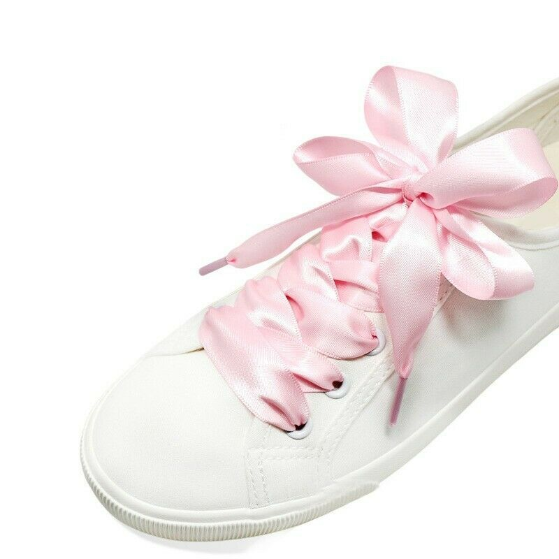

OH HO HO! How presumptuous of you to assume that I would stop at the shape! You don't know me well enough then!
Lace! Frills!! RUFFLES! Quite frankly, I can keep going, but you get the point. Change your lace, and you have a new butterfly!
I want you to experiment until you find a butterfly wing that you like!

Remember, a butterfly is symmetrical. A finished butterfly bow should have visible loops on both sides.
Go outside and touch grass! A butterfly's top wing are sometimes larger than the bottom.
Please, please take my previous advice to heart. Don't default on your shoelaces.
Our eyes can see more than one color for a reason, duh. Pink lace is always my answer!
I honestly don't know what else to write.
You can match it to your outfit too? But lowkey, my wardrobe has been either black, white, or the token brown. I need to listen to my own advice.